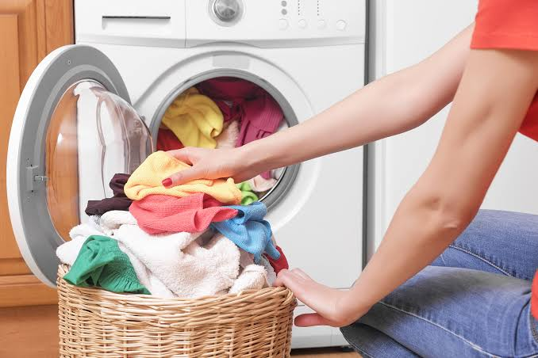

Management in living teaches people how to use resources wisely to improve family life, health, comfort, and well-being.
Introduction to Management in Living
Management in living is the study of how individuals and families use available resources to meet their needs and improve the quality of life. It focuses on making wise decisions about housing, food, clothing, money, time, and relationships in the home. The subject helps learners understand how to create a comfortable, healthy, and orderly environment for everyday living.
It is closely related to home economics because it deals with practical skills used in daily life. Good management at home leads to better health, reduced waste, healthier relationships, and improved productivity. It helps families plan effectively and use their resources in a balanced and sustainable way.
Management in living helps families make the best use of resources for a better life.
Family and Home Management
Family and home management is the skill of organizing the home and family activities to meet needs efficiently. It involves planning, coordination, decision-making, and control of household tasks. Home management allows family members to live in a safe, healthy, and orderly environment while using time, money, and energy wisely.
It includes the management of daily routines, work allocation, family goals, and responsibilities. A well-managed home creates peace, prevents confusion, and improves the quality of life for every member.
Home management organizes family life so that daily responsibilities are handled smoothly.
Home management principles
Home management principles guide how household activities should be planned and carried out. These principles include planning, organizing, coordination, control, and flexibility. They help families set priorities, avoid waste, and make productive use of available resources.
Good home management also requires fairness, cooperation, and respect for individual needs. When these principles are applied, the home becomes more comfortable and less stressful.
Home management principles create order and efficiency in daily family life.
Decision making in home
Decision making is a major part of management in living. Families regularly make decisions about food, clothing, education, spending, and work. Good decisions are based on knowledge, values, needs, and available resources. They should also consider future consequences.
Effective decision making saves time and money and reduces conflict. It helps family members agree on goals and actions that are practical and meaningful.
Good household decisions lead to better use of resources and fewer problems.
Planning family activities
Planning family activities involves arranging work, rest, recreation, meals, and responsibilities in a balanced way. It ensures that all members understand their routines and roles. Planning helps prevent disorder and reduces pressure caused by last-minute decisions.
Family plans may include weekly menus, cleaning schedules, study time, and budgeting. A well-planned home supports both productivity and happiness.
Planning family activities creates balance and harmony in home life.
Work simplification
Work simplification is the process of making household tasks easier, quicker, and less tiring. It involves organizing tools, arranging work in sequence, reducing unnecessary steps, and using better methods. The aim is to save time, energy, and effort while maintaining quality.
This principle is useful in cooking, cleaning, laundry, and childcare. It helps family members manage their workload with less stress.
Work simplification helps households save time and energy in daily chores.
Resources in the Home
Resources are the means available for meeting family needs. These include human resources, material resources, financial resources, and time. Every family has limited resources, so managing them well is essential for successful living. Resource management helps families achieve more with less and avoid waste.
Effective resource use supports comfort, security, and progress. Families that understand their resources can plan better and respond to challenges more confidently.
Resource management helps families use what they have in the most effective way.
Human resources
Human resources are the people in the family and community who contribute time, skill, knowledge, and labour. These may include parents, children, relatives, and helpers. Human resources are valuable because they make it possible to carry out household duties and maintain relationships.
Managing human resources well means assigning tasks fairly, encouraging cooperation, and respecting individual strengths.
Human resources are the people who make daily family life possible.
Material resources
Material resources include household goods such as furniture, utensils, clothing, tools, and appliances. These items make family life easier and more comfortable. Their proper use and maintenance ensure that they last longer and serve the family well.
Careful choice and use of material resources also reduce waste and save money.
Material resources include the physical things used in everyday home life.
Financial resources
Financial resources are the money available to the household. They are used for food, clothes, shelter, education, health care, transport, and savings. Managing money wisely is essential because families must balance income with expenditure and future needs.
Budgeting helps families plan where money should go and prevents unnecessary spending. Wise financial management creates stability and security.
Financial resources must be managed carefully to meet present needs and future goals.
Time resources
Time is a limited resource in every home. It must be planned carefully so that essential activities are completed without stress. Time management includes scheduling household work, rest, study, and leisure.
When time is managed well, family members can be more productive and less overwhelmed.
Time is a precious asset that must be used carefully in daily living.
Food and Nutrition
Food and nutrition are central to health and well-being. A good home manager knows how to choose, prepare, and serve food that meets the nutritional needs of family members. Food provides energy, supports growth, and helps protect the body against disease.
Proper nutrition depends on combining the right foods in the right amounts. A family that eats well is healthier, stronger, and more productive.
Good food and nutrition support health, growth, and overall quality of life.
Balanced diet
A balanced diet contains the right proportions of carbohydrates, proteins, fats, vitamins, minerals, and water. It helps the body grow, repair tissues, maintain energy, and fight disease. A balanced meal may include staples, proteins, vegetables, fruits, and water.
Understanding nutrition helps families plan meals that are healthy and affordable.
A balanced diet provides the body with everything it needs to function well.
Meal planning
Meal planning is the process of deciding what food to prepare for a day, week, or special occasion. It helps save money, reduce waste, and ensure that meals are nutritious. Meal planning also makes shopping easier and cooking more organized.
A good meal plan takes into account family preferences, health needs, available ingredients, and budget.
Meal planning brings order and nutrition to daily eating habits.
Food storage
Food storage is the safe keeping of food to maintain its freshness and prevent spoilage. Proper storage methods include refrigeration, drying, freezing, sealing, and labeling. Good storage protects food from contamination and reduces waste.
Families that store food properly save money and reduce the risk of food poisoning.
Food storage preserves nutrients and prevents spoilage and waste.
Food hygiene
Food hygiene refers to the practices that keep food safe and clean. It involves washing hands, cleaning utensils, cooking food thoroughly, preventing cross-contamination, and storing food at suitable temperatures. Poor food hygiene can cause illness and food poisoning.
Maintaining food hygiene is one of the most important responsibilities in home management.
Food hygiene protects the family from illness and ensures safe eating.
Housing and Clothing
Housing and clothing are essential parts of daily living. Housing refers to the home environment, including cleanliness, comfort, safety, and space. Clothing covers personal appearance, protection, modesty, and comfort. Both areas influence health, dignity, and quality of life.
A well-managed home and wardrobe reflect good planning and care. They also support confidence and social well-being.

Housing and clothing help families maintain comfort, dignity, and order in daily life.
Home environment
The home environment includes the physical and social conditions inside the home. A good home environment is clean, safe, attractive, and suitable for living. It affects mood, health, learning, and relationships.
The home environment can be improved through cleanliness, ventilation, proper lighting, organization, and respect for one another.
A healthy home environment supports comfort, well-being, and family harmony.
Clothing selection
Clothing selection involves choosing clothes that are suitable for purpose, comfort, weather, age, and budget. Good clothing should be durable, easy to care for, and appropriate for the occasion. It should also protect the body and reflect personal style.
Selecting clothing wisely helps families spend money responsibly and avoid unnecessary purchases.
Clothing selection combines usefulness, comfort, and good judgment.
Laundry and care
Laundry and care involve cleaning, washing, drying, ironing, and maintaining clothing and household textiles. Proper care extends their life and keeps them looking attractive. It also helps maintain hygiene and makes clothing more comfortable to wear.
A good home manager knows how to sort clothes, use suitable detergents, and follow care labels.
Proper laundry and care keep clothes clean, durable, and comfortable.
Home safety
Home safety refers to the measures taken to prevent accidents and injuries at home. It includes safe storage of sharp objects, proper wiring, safe use of appliances, child supervision, and prevention of fires and falls. A safe home protects the health and life of family members.
Management in living includes creating a home environment that is not only comfortable but also secure.
Home safety protects family members from harm and creates peace of mind.